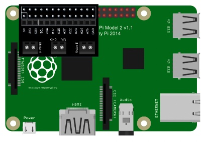
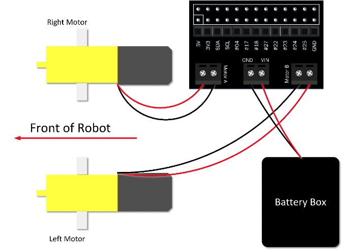
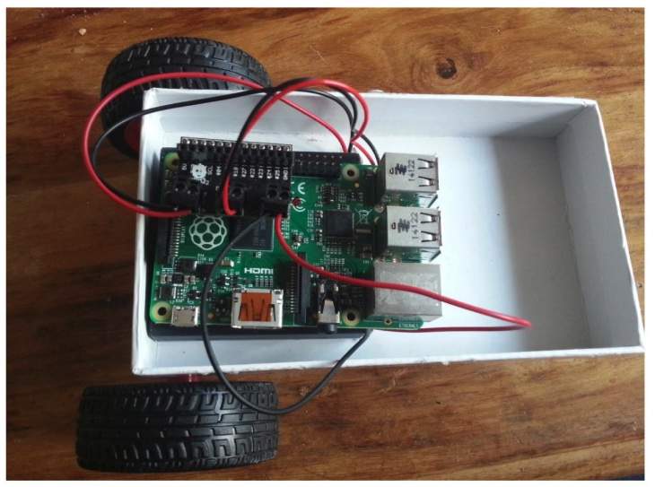
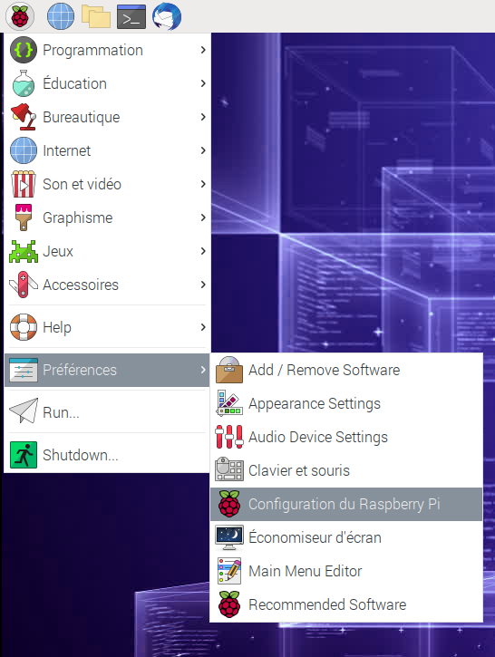
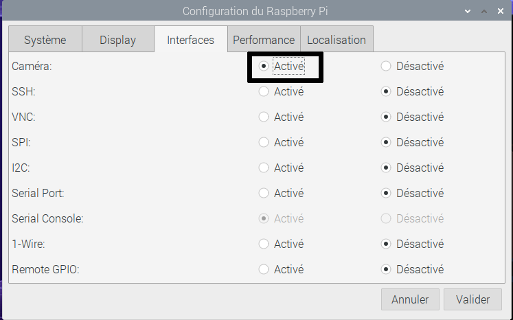

4. Construction du FetchBot¶
Objectif: Découverte de Raspberry Pi et construction du rover
Âge |
10 à 18 ans |
Notions abordées |
Carte programmable Raspberry Pi, connexion à une carte programmable, robotique. |
Durée |
4 heures |
Dispositif pédagogiques |
Par groupe de 2 |
Matériel |
1. Un laptop/tablette par groupe de 2, avec connexion à Internet |
Prérequis |
1. Avoir pris en main le Raspberry Pi, et savoir s’y connecter avec VNC viewer (voir Rasberry Pi: Prise en main et préparation) |
4.1. Matériel:¶
Ce dont tu as besoin:
Pour cette partie, tu auras besoin des éléments suivants du CamJam EduKit :
La carte contrôleur de moteur CamJam EduKit
Deux moteurs (avec les fils déjà attachés)
Deux roues
Le boîtier de piles
La boule à roulette
Du ruban adhésif double face pour coller les pièces au châssis - à découper selon les besoins.
Ainsi que :
Un Raspberry Pi et une caméra pour Raspberry Pi
Une alimentation pour Raspberry Pi, ou une batterie de type chargeur de téléphone
4 piles AA. Il est conseillé d’utiliser de bonnes piles, car certaines piles bon marché ne peuvent pas fournir le courant nécessaire pour faire fonctionner les moteurs.
Un petit tournevis cruciforme
Un châssis - faites appel à votre imagination (également non fourni !)
4.2. Aperçu¶
Dans cette activité, tu vas assembler les pièces de base et construire le rover. La construction est très facile. Au plus simple, la boite du CamJam EduKit est utilisée comme chassis. Il s’agit de coller les moteurs sous la boîte, y attacher les roues, et placer la bille à l’avant, grâce à des scotchs fournis dans le kit. Pour le cablâge, les fils des moteurs et la batterie sont reliés au contrôleur moteur, que l’on place sur le Raspberry Pi dans la boîte. La caméra est finalement placée à l’avant.
4.3. Châssis¶
La simplicité du kit offre une large place à la créativité pour la construction du chassis. Quelques exemples de rovers construits avec le CamJam EduKit sont données ci-dessous, avec un chassis utilisant la boîte du kit, un chassis imprimé en 3D, ou l’utilisation d’une simple planche de bois.
Après avoir décidé du châssis, fixe les moteurs à une extrémité et la boule à roulettes à l’autre. Du ruban adhésif double face peut être utilisé pour fixer les moteurs. La boule à roulettes est fournie avec des vis, tu peux donc la boulonner, ou la scotcher, à ton châssis.
Note
Les roues du rover se déplaceront mieux si la majeure partie du poids du Raspberry Pi et des batteries se trouve sur les roues motrices. Par conséquent, construis le châssis de manière à ce que la majeure partie du poids se trouve au-dessus d’elles.
4.4. Connexion du contrôleur de moteur EduKit au Raspberry Pi¶
Assure-toi que ton Raspberry Pi est éteint avant d’y connecter quoi que ce soit. Branche la carte contrôleur de moteur EduKit sur les broches GPIO de ton Pi, la partie principale de la carte contrôleur étant suspendue au-dessus du Pi, comme dans le schéma suivant :
Une fois que tu es sûr de savoir comment il s’adapte à ton Pi, tu devras retirer la carte pour faciliter la connexion des fils pour les moteurs et la batterie.
4.5. Connexion des moteurs et du boîtier de batterie à la carte du contrôleur de moteur EduKit¶
Retourne le robot sur ses roues. Fixe ton Pi et le boîtier à piles (avec les piles insérées et éteintes) sur le dessus du châssis avec du ruban adhésif double face ou du mastic de montage. Connecte maintenant le boîtier de piles et les moteurs aux bornes à vis du contrôleur comme indiqué dans le schéma ci-dessous (le Pi n’est pas représenté pour plus de clarté).
Le fil noir va à la borne marquée GND (masse) et le fil rouge va à la borne marquée VCC (tension). Remarque : Il est important de savoir dans quel sens passent les fils du boîtier de la batterie. Tu risques d’endommager la carte du contrôleur de moteur EduKit si tu la connecte dans le mauvais sens, alors vérifie le câblage avant d’allumer quoi que ce soit.
Connecte le moteur situé à droite du robot au bornier marqué Moteur A et le moteur situé à gauche au bornier marqué Moteur B. Il n’est pas important à ce stade de savoir quels fils du moteur entrent dans quelles bornes, car le câblage rouge/noir n’est pas garanti dans le même sens sur les moteurs, qui peuvent donc tourner dans le mauvais sens. Tu réparereras ce problème lorsque tu testeras les moteurs.
4.6. Choix d’une batterie pour votre Pi (facultatif)¶
Afin de rendre ton Raspberry Pi mobile, tu dois l’alimenter avec une batterie portable. Tu peux utiliser plusieurs types de batteries, mais le plus simple est d’utiliser une batterie pour charger les téléphones portables. Elles doivent être capables de fournir suffisamment de courant pour le Pi (au moins 1A est recommandé), et avoir assez de puissance pour durer un temps raisonnable avant de s’épuiser. Tu trouveras un exemple de pack batterie sur le site Web de 4tronix : http://bit.ly/EduKitBattery. Utilise un câble USB standard vers microUSB pour connecter la batterie à votre Pi.
Note
Si tu n’as pas de batterie pour alimenter ton Raspberry Pi, ton robot sera ” attaché “, ce qui signifie que tu ne pourras pas aller plus loin que le câble d’alimentation que tu utilises pour alimenter ton Pi.
4.7. Robot terminé¶
Si vous ne l’avez pas encore fait, reconnectez la carte du contrôleur de moteur au Raspberry Pi.
Le robot de base est maintenant terminé.
Dans la prochaine feuille de travail, vous apprendrez à faire tourner les roues et à les faire tourner dans la même direction en même temps.
4.8. Ajout de la caméra¶
La caméra se place dans le port caméra du Raspberry Pi.
|
|
Carte Raspberry Pi. Le port pour attacher la caméra |
caméra Raspberry Pi |

{kind=link}
{kind=link}
{kind=link}
{kind=link}
{kind=link}
{kind=link}
{kind=link}
{kind=link}
4.8.1. Connecter le module caméra¶
Assure-toi que ton Raspberry Pi est éteint.
Trouve le port du module caméra
Tire doucement sur les bords du clip en plastique du port
Insère la nappe caméra ; assure-toi que la nappe est dans le bon sens
Remets le clip en plastique en place

4.8.2. Configuration dans le Raspberry Pi¶
Démarre ton Raspberry Pi. Va dans le menu principal et ouvre l’outil Configuration du Raspberry Pi.
{kind=link}
Sélectionne l’onglet Interfaces et assure-toi que la caméra est activée :
{kind=link}
Redémarre ton Raspberry Pi.
4.8.3. Vérifie que la caméra fonctionne¶
Une fois le Raspberry Pi redémarré, tu peux aller sur le site de la Teachable Machine. Créer un projet image, et lance la caméra pour prendre des photos et vérifier que la caméra fonctionne.
4.9. Télécommande le rover¶
Tu peux vérifier que tout fonctionne sur le rover grâce à la télécommande Web. Il faut lancer le programme Python remote_control.py. Le programme se trouve dans le répertoire ‘tools/remote_control’ du dépôt GitHub. Pour le lancer, ouvre un terminal de commande, puis va dans le répertoire ‘fetchbot-fr/tools/remote_control’ avec la commande
cd fetchbot-fr/tools/remote_control
Note
Si le répertoire n’existe pas, c’est que les fichiers du dépôt Github se trouvent dans un autre répertoire que celui donné en exemple lors de la copie du dépôt GitHub. Remplace le répertoire fetchbot-fr par celui où les fichier ont été téléchargés.
Lance ensuite le script remote_control.py avec la commande python
python3 remote_control.py
Tu peux ensuite ouvrir la page Web dans le navigateur à l’adresse 0.0.0.0:2204.
Pour quitter le programme, retourne dans le terminal de commande, et appuie sur les touches CTRL+C.
4.10. Autres ressources¶
https://gpiozero.readthedocs.io/en/stable/recipes.html
4.11. Remerciements¶
Cette section reprend des éléments:
du tutoriel CamJam EdutKit
du tutoriel de prise en main de la caméra Raspberry de la Raspberry Pi Foundation.